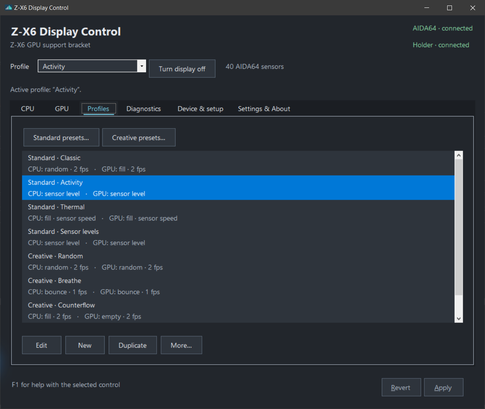

Pick your readings
Choose from the sensors AIDA64 exports. Show a different temperature source on either side, including a GPU hotspot when available.
Beta 0.1.0-beta.1 Portable Windows app
Take control of your GPU holder’s display. Choose CPU and GPU temperature sensors in AIDA64, tune each bar and save your setup as a profile.
Free & open source · MIT licensed
Windows / .NET Framework 4.7.2+ · AIDA64 required
Beta build, unsigned executable. Release notes & checksums

Make it your setup
Set the temperature source and bar behavior separately for CPU and GPU.
Choose from the sensors AIDA64 exports. Show a different temperature source on either side, including a GPU hotspot when available.
Fill, empty, bounce or random. Keep a steady speed, follow a sensor reading, map usage to a bar level or hold a fixed level.
Use the Windows tray, turn the display on or off, and optionally start with Windows. The app reconnects when the USB connection returns.
Saved the way you like it
Start with eight editable presets, from steady animations to sensor-driven levels. Make your own, duplicate a favorite or import and export profiles as JSON.
Preview your edits, then Apply to save and activate them. Revert restores the saved configuration.
Explore the app in the README
Before the first reading
You’ll need a Z-X6 holder, AIDA64 and Windows with .NET Framework 4.7.2 or later.
Download the portable ZIP and extract it. Keep ZX6DisplayControl.Core.dll beside ZX6DisplayControl.exe.
Open Preferences → Hardware Monitoring → External Applications. Enable shared memory and export the sensors you want to use.
Disable AIDA64’s LCD → Turing output and close the original GPU LCD utility. Run this app, choose your sensors or a profile and select Apply.
This beta controls the two temperature readouts and their bars. It has no RGB, brightness, custom-image or firmware controls. Other holder models and firmware variants have not been verified.
Open to contributions
Ask questions, discuss ideas, report a bug or contribute a change.